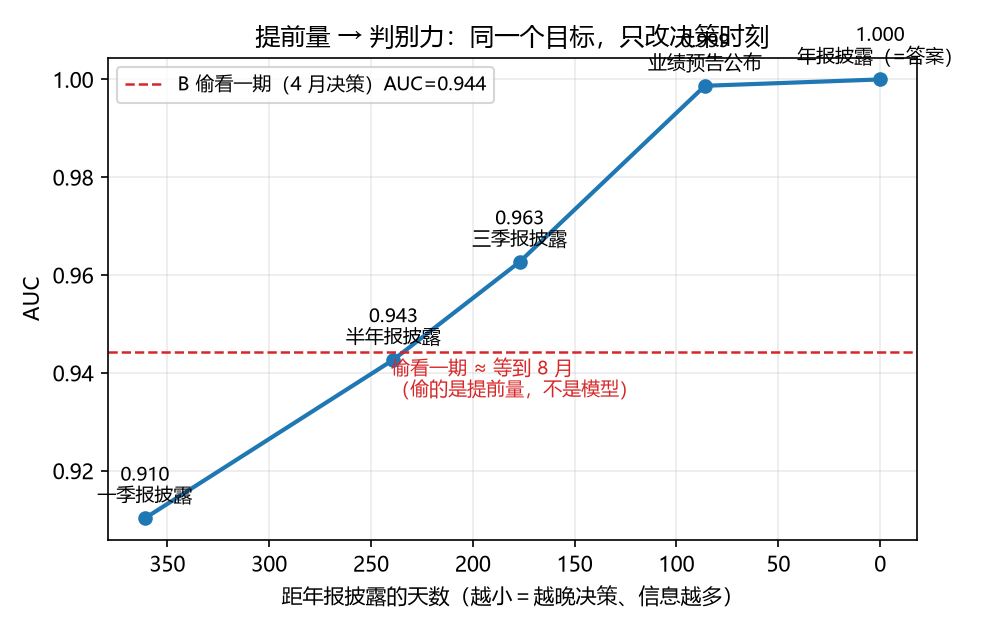
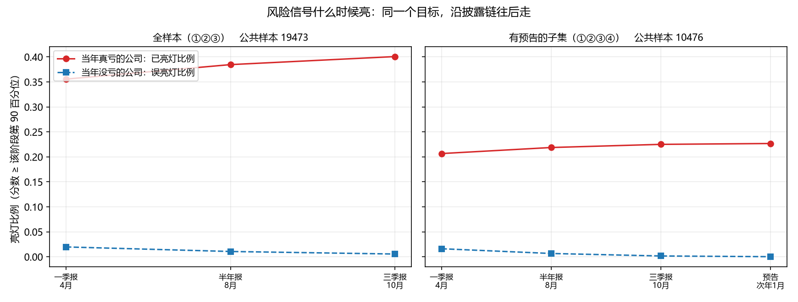

财务风险预警 · 数据用对没有值多少分
一个端到端可复跑的 LightGBM 落地：公开定期报告 → 风险名单，并把「谁在什么时刻能看见什么」变成可量化的分数差 · 2026-09 ·
本地仓库 C:\dev\finlab-ml（33 笔提交 · 10 条命令复跑 · 公开仓待定）
问题
- 风控模型「离线好看、上线不行」，多数不是模型问题，是数据用错：拿还没披露的报表当输入、用未来的样本训练、把「最近一次披露日」当成首次披露日。
- 这类错不报警：跑得通、分数更高、看着更漂亮 ⇒ 每格都要有一条不用人当裁判的判据。
做了什么
- 面板：A 股 2016Q1–2026Q2 · 42 期 · 195,707 行 · 5,252 只股票（东财四张批量表 + 巨潮披露时间表当 PIT 锚点）。任务：样本 =（代码, 年份）取一季报，标签 = 当年年报亏损，决策时刻 = 一季报实际披露日（中位 4/23）⇒ 真实前瞻 8–12 个月。
- 四格对照（同一份数据 / 同一个模型 / 同一个测试集，只改「数据用对没有」）：A 诚实（PIT + 逐年游走）· B 偷看未来一期（多接一张半年报）· C 随机切分（训练集含未来年份）· D 负对照（训练标签打乱）；基线 = 会计持续性。
- 披露链五格：一季报 → 半年报 → 三季报 → 业绩预告 → 年报，每格只用那一刻真的能看见的东西；另做信号时间线与监管口径的第二组标签（见下）。
最硬的读数
| 臂 | 改了什么 | AUC | top-10% 里真亏的比例 |
|---|
| A 诚实 | —— | 0.9103 | 84.95%（基准 23.9% ⇒ lift 3.55） |
| B 偷看未来一期 | 特征 +半年报（121 天后才披露） | 0.9442 | 92.40% |
| C 随机切分 | 训练集含未来年份 | 0.9246 | 87.63% |
| D 负对照 | 训练标签打乱（5 个种子） | 0.4993 ± 0.0637 | 25.2% |
| 基线：上年是否亏损 | 不训练 | 0.7512 | 70.4% |
- 「偷看一期」的那 3.4 分 ≈ 老老实实等到 8 月的合法分（0.9442 vs 0.9427）⇒ 偷的不是更强的模型，是提前量：该问的是「为提前多久，愿意放弃多少分」。A 臂逐年 0.891 / 0.896 / 0.922 / 0.928，三种子极差 0.001 ⇒ 这个差远在噪声外。
- 信号什么时候亮：会亏的公司进前 10% 的比例 4 月 35.6% → 8 月 38.5% → 10 月 40.1%（误报 2.0% → 0.6%）；43.8% 的亏损公司从未亮灯 ⇒ 预警的天花板不是模型，是基本面在哪一天开始变难看。
- 数据源本身的坑：东财批量表的「公告日期」不是首次披露日，而是「最近一次披露该期数字的公告日」——带「上年同期」栏的报表全期次晚 365 天；证据：茅台 2016Q1 实际
2016-04-21、东财利润表写 2017-04-25。
- 换成监管口径的标签（自建 as-of「被实施风险警示」：952 次戴帽 / 606 家）：AUC 0.910 → 0.813，但前 10% 名单抓住 49% 的戴帽事件（亏损标签只有 36%）、lift 4.89× ⇒ 目标越稀有，AUC 越难高，名单反而越值钱。

提前量 → 判别力：红线是「偷看一期」那 3.4 分，正好切在半年报那个点上。

信号什么时候亮：红线 = 真会亏的公司，蓝线 = 误报。
一条最值钱的方法论
- 任何「差多少分」先确认两次读数在同一批样本上：C 臂 0.9246 对比 A 的 0.9103 看着是 +1.4 分，但两批测试样本不同；把 A 限制到同一批重算是 0.9122 ⇒ 真差 +1.24 分。
- 「分得开」≠「加得进」：诉讼/担保信号单独看差 17.6 个点，加进模型只值 +0.0014；当第二条通道扩名单，又被同等规模的模型名单支配 —— 这条曾让我撤回一个结论。
- 负对照要分布、且必须用 macro 读：无信号模型 pooled 下能读到 0.555 / 0.407，macro 才回到 0.5；跨阶段只比分位、分母要一致（见
docs/口径.md）。
诚实边界
- 主表用 「年报亏损」；ST 标签已做成 as-of（第二组读数，但每年只有 20–74 个正例 ⇒ 只能四年合并报）。退市样本缺失（最该抓的一批被剔除）；日期与面板数值都做了双源全量对账（净利润同名只 23%、对齐概念后 99.6%）。
- 别把 96.2% 的精确率读成召回（前 10% 名单只覆盖 40% 的亏损公司）；预告那格是子集（43.8% 正例率），业绩快报那格做不了（PIT 锚点被污染）。
- 「为什么戴帽」没答上来：标题不带原因、详情页是 JS 壳，须取公告 PDF 正文 —— 明知路径、未做（「做不了」和「没做」分开写）。